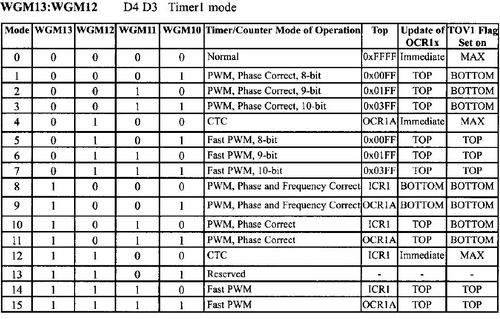

We wrote the OVF-ISR in part-1 in the app layer, but was that the best
code design ?!?
Definetly its a big fat NO, let me demonstrate why...
We Got many ISRs along our code that is related to different pereferals
of the Micro-Controller, so now at least we know that we need to include
it in the MCAL because its pereferal related, yet here is the problem.
When we wrote our OVF-ISR we used some functions from LED.h (HAL) so the
first rule of a well designed code is not to use an upper layer inside a
lower one.
Okay so now lets see how we can solve such a problem...
let me Introduce you to a new software TechniqueCall Back Function, and this will take an input of a pointer to function.
Lets Implement this in code and then we will trace it back to understand
what happened.
#include <avr/interrupt.h>
void (* Ptr) (void);
void Set_CallBack(void(*p)(void))
{
Ptr = p;
}
ISR(TIMER0_OVF_vect)
{
static uint32 cnt = 0;
cnt++;
if(cnt == NUM_OVF)
{
cnt = 0;
(*Ptr)();
TCNT0 - INIT_VALUE;
}
}
#include "Timer.h"
#include "LED_HAL.h"
extern uint32 NUM_OVF ;
extern uint8 INIT_VALUE;
int main(void)
{
LED0_Init();
Timer0_Init();
Set_CallBack(LED0_Toggle);
Timer0_SetDelay(2000);
Timer0_Start();
while (1)
{
}
}
So Now we can conclude that we made everything more generaic and a very well designed code where each ISR will be included to the Driver using it from now on.
If we Look at T0-Internal-Circuit we can find realize that there are
two registers one of them we have already used in our code which is
TCNT0 which was the main counter of Timer0 but here is the new
register we wanna introduce which is OCR0 or
Output Compare Match Register and they are both connected to
a Comparator.
So here is the deal with the CTC we will write the number of ticks we
wanna achieve in OCR0 and the TCNT0 will count just like before but
the difference, that whenever the TCNT0 reaches the count inside the
OCR0 the Comparator will detect that they are the same and the
Output Compare Flag "OCF" will be raised and will fire
the ISR of the Output-compare-match (ISR(Timer-OC))
Let us work on CTC-Mode on Timer1 to understand the different Timers.
ATMEGA32 gave us the opportunity to work on Timer1 with capacity registers of 16-bit where we are gonna combine using the software two 8-bit registers as we did before with a high and low registers. and actually ATMEGA32 gave us various modes to work on Timer1 such as the Normal-mode we emplemented on Timer0 and one of the modes is the CTC aswell now lets go check the Different modes.
As we can see that the CTC(mode-4) is wokring at a top of OCR1A which means that this is the Register that we will use for the compare match with the TCNT1.
Let's say we wanna control a DC-Motor with a speed of 50%(Half-Loaded),
therfore we are going to minipulate the pulse entering this motor to be
50% high and 50% Low.
This means that we want (Total Wave On)/(Top_Value) needs to be equal
50%.
∴ Duty-Cycle = (Total_Wave_On/Top_Value)*100.
One of the Things that can minipulate the Duty-Cycle is the PWM, which
is one of the modes inside the Timers.
Okay so now we know that we do have a Register called TCNT which is
responsible for counting inside the Timer, and when it reaches the
maximum count the OVF is raised and we also Introduced the OCR where we
can intiate inside a Time to compare with TCNT and if equal the OCF is
raised. so we can generalize the Cycle of the Timer to two stages one
where the OCR limit is reached and the second is where the OVF happens.
okay now we will consider the full pulse is = 255 (Full Cycle in TCTNT)
and we will say that we want the value store inside the OCR = 100.
Here is whats going to happen, the wave is normally high and the TCNT
started counting till reaching the value 100 then the OCF is raised so
the Pulse will be inverted to low, and the TCNT will continue on
counting till reaching 255, then the OVF is raised signifing the end of
a full pulse and the cycle is inverted again to High and the process
goes on.
∴ in this case Duty-Cycle = (100/255)*100 = 39%
This means that only 39% of the wave of one pulse will be High and in
other words the DC-Motor will be loaded with 39%.
This is called The Non-Inverted-Mode where the Pulse is normally High
yet we have the inverted mode where the Pulse is normally low.
One Important Factor in what we just explained is the Frequency of wave
Generated, how much time will the pulse take to be repeated
∵ fTimer = (foscillator)/(Prescalar)
∵ fGenerated_Wave = (fTimer)/(Top)
∴ fGenerated_Wave =
(foscillator)/(Prescalar*Top)